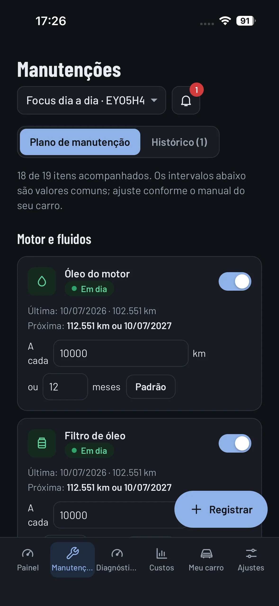
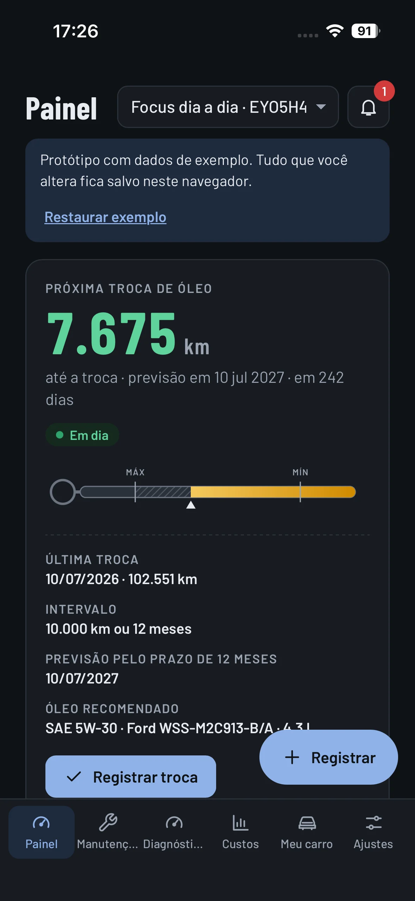
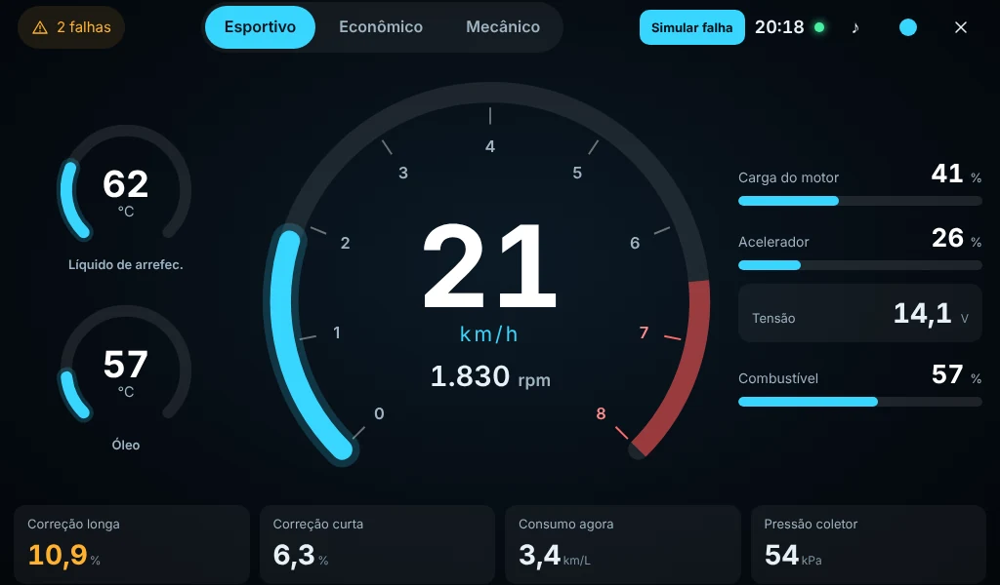
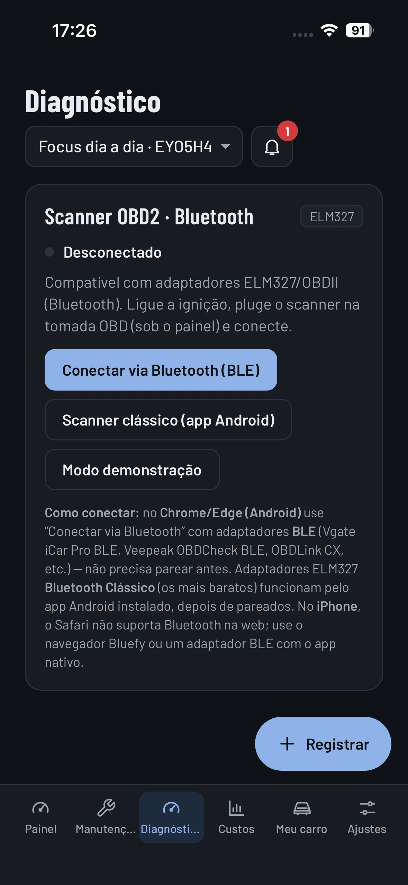
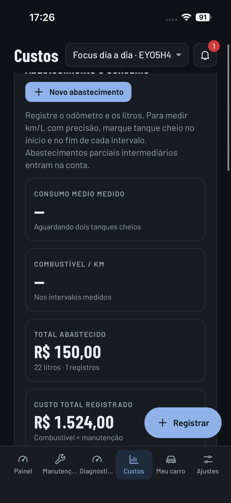
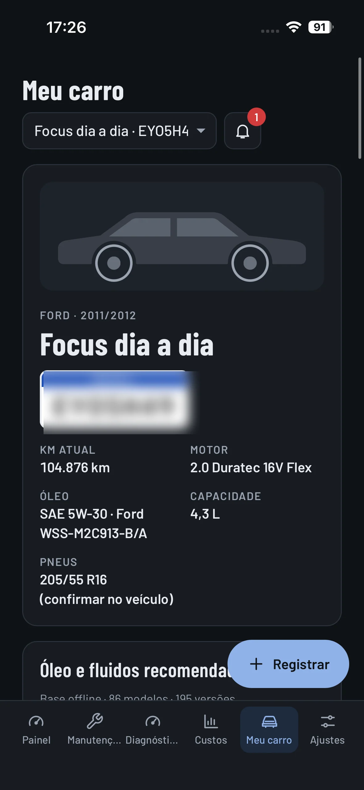
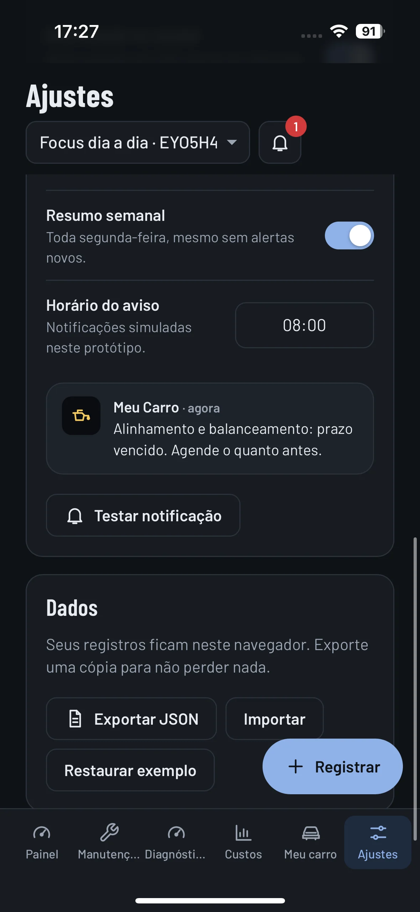

🛠️
Plano de manutenção
Controle trocas de óleo, filtros e outros itens por quilometragem ou prazo.
Saiba quando cuidar do seu veículo, acompanhe manutenções, organize despesas e explore recursos de diagnóstico — tudo em um só lugar.
Disponível como aplicativo web e Android · Interface real do projeto


Um aplicativo pensado para acompanhar a rotina de manutenção do seu veículo.
Controle trocas de óleo, filtros e outros itens por quilometragem ou prazo.
Visualize o que está em dia e o que merece atenção.
Registre gastos e acompanhe os dados de consumo disponíveis.
Recursos de conexão com adaptadores ELM327 compatíveis, conforme dispositivo e conexão.
Consulte as informações cadastradas e as especificações disponíveis.
Mantenha seus registros reunidos para consultar quando precisar.
Visualize os dados disponíveis do veículo em um painel inspirado no universo automotivo: velocidade, rotação, temperaturas e outros parâmetros compatíveis com seu scanner OBD2.
Visualização real do aplicativo em modo de demonstração. As leituras disponíveis dependem do veículo, do adaptador e da conexão. Modos de exibição: Esportivo, Econômico e Mecânico.

Sem telas inventadas: estas são capturas do próprio aplicativo, incluindo o painel OBD2. A experiência completa está disponível na versão web ou Android.
Veja a próxima troca de óleo e os cuidados previstos.
Acompanhe óleo, filtros e intervalos de revisão.

Conexão Bluetooth e ferramentas para adaptadores compatíveis.

Organize abastecimentos e despesas do carro.

Seu veículo e suas informações em um só lugar.

Preferências, avisos e opções de exportação.
Indicadores do veículo em uma interface dedicada.
Imagens reais fornecidas pelo desenvolvedor. A placa foi ocultada em uma captura por privacidade. Esta página não permite operar o aplicativo.
Reúna os dados do carro no aplicativo.
Informe manutenções, abastecimentos e quilometragem.
Veja prazos, histórico e gastos em um só lugar.
Comece a organizar a manutenção do seu veículo com o Meu Carro.
Configure os links oficiais antes de publicar. O APK é distribuído fora da Play Store enquanto não estiver publicado.